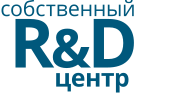
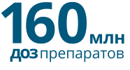
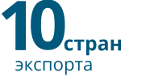
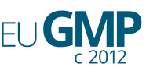
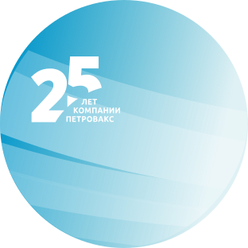

- 
- 
- 
- 

Инвестиционная стратегия компании направлена на разработку, развитие производства и импортозамещение лекарственных средств и вакцин для лечения социально значимых заболеваний, таких как онкологические, аутоиммунные, инфекционные и орфанные.

Портфель оригинальных препаратов, дженерических лекарственных средств и БАД
Собственный R&D-центр, патенты в России и за рубежом на молекулы и технологии производства. Препараты компании применяются в различных областях медицины
Современное биотехнологическое производство в соответствии со стандартами GMP ЕАЭС и EС
Один из крупнейших экспортеров вакцин для профилактики гриппа и оригинальных препаратов
Партнер ведущих мировых фармкомпаний: Pfizer, Abbott, Boehringer Ingelheim, ISU Abxis
в структуре «Петровакс»
- R&D center
- BD department
- Clinical studies and product registration
- Administration Office
- API & Finished-dose
- Manufacturing Site
- Quality Control
- Marketing and Sales Force
- Pharmacovigilance
Компания «Петровакс» основана в 1996 году командой российских ученых.
миссия
Инновационные препараты для здоровья и улучшения качества жизни
ценности